Claude Code 记忆机制图解：为什么不用向量数据库？
大家好，我是小林。
我在公众号已经陆陆续续写过好几篇图解 Claude Code 原理的文章，基本每篇都是万字长文，配上几十张图解。
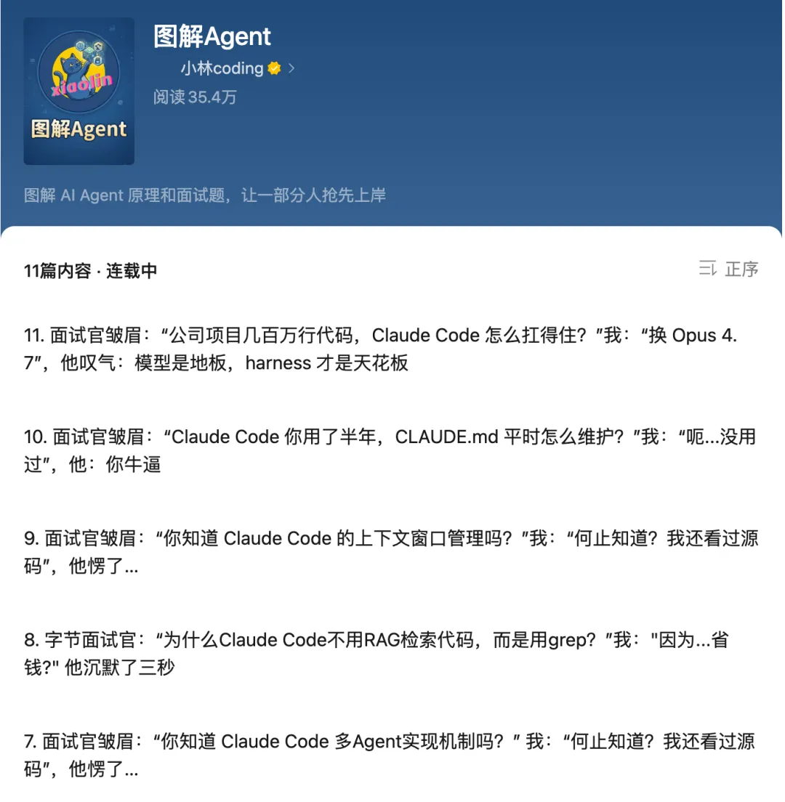
说实话，开写第一篇之前我心里是打鼓的。这种硬核到要啃源码的技术文，真的会有人愿意读吗？
结果挺出乎我意料。这么硬核的图解原理文，竟然有好几篇阅读量冲到了 5w+，最高的一篇甚至直逼10w+了。
不是，林友们，你们一个个都这么硬核的吗？
既然大家爱看，那就接着写。
最近陆续收到不少读者留言，好几位读者点名想看一篇深度讲 Claude Code 记忆机制的文章。理由出奇地一致：面试被问太多次了。
这事我太能理解了。
agent 的记忆机制，如今已经是个不折不扣的面试热点。
只要你简历上挂着一个 agent 项目，面试官大概率会追着问一句：「你这个 agent 的记忆机制，到底是怎么做的？」
而大多数人能端出来的，往往只有一个标准答案：「上向量数据库，把对话存成 embedding，每次新会话做相似度检索。」这答案不能算错，但只要你知道 Claude Code 偏偏不这么做，就会发现它平平无奇。
那这一篇，我们就把 Claude Code 的记忆机制，从源码层面翻个底朝天。
读完你会撞见一件挺反直觉的事：它走的路子跟业界主流的「向量检索」完全不一样，土到没用一个向量数据库，但用起来反而比向量检索好用得多。
照例，开写之前先把几个问题摆出来，这篇文章就是带你一个一个把它们想明白：
- LLM 明明是「无状态」的，那它跟你聊到第 50 轮还像记得你，记忆到底存在哪？
- 滑动窗口、对话摘要、向量检索这些主流方案，听上去都挺合理，到底差在哪？
- Claude Code 不上向量数据库，那它究竟拿什么来存记忆？
- 为什么一个 CLAUDE.md 不够用，非得拆成六个层级？
- Claude Code 怎么做到让 agent「自己学、自己写、自己用」记忆这一整个闭环？
- 这套设计里，到底有哪几条原则能直接抄进你自己的 agent 项目？
- 面试官再问起记忆机制，怎么答才能让对方眼前一亮？
七个问题逐个想透，这道面试题你就稳了。
一、先聊聊「LLM 其实没记忆」
聊 Claude Code 怎么做之前，我们先退一步，把「LLM 没记忆」这件事彻底说清楚。如果你已经很熟悉，可以直接跳到第二节。
LLM 的「金鱼记忆」是怎么回事
我们先做一个小实验。
你跟 ChatGPT 聊到第 50 轮的时候，它好像还记得你前面说过的话。
请你停一下，先猜一下：这个「记得」，到底是怎么发生的？
是模型本身把你说的话存进脑子里了？还是别的什么机制？
……
答案可能跟你想的不太一样。LLM 本身根本「记不住」任何东西，它是彻头彻尾无状态的。
每次你按下回车，对它来说都是「从头看一遍」：把系统提示词（system prompt）、所有历史对话、当前问题，全部塞进去，然后输出一个回复。
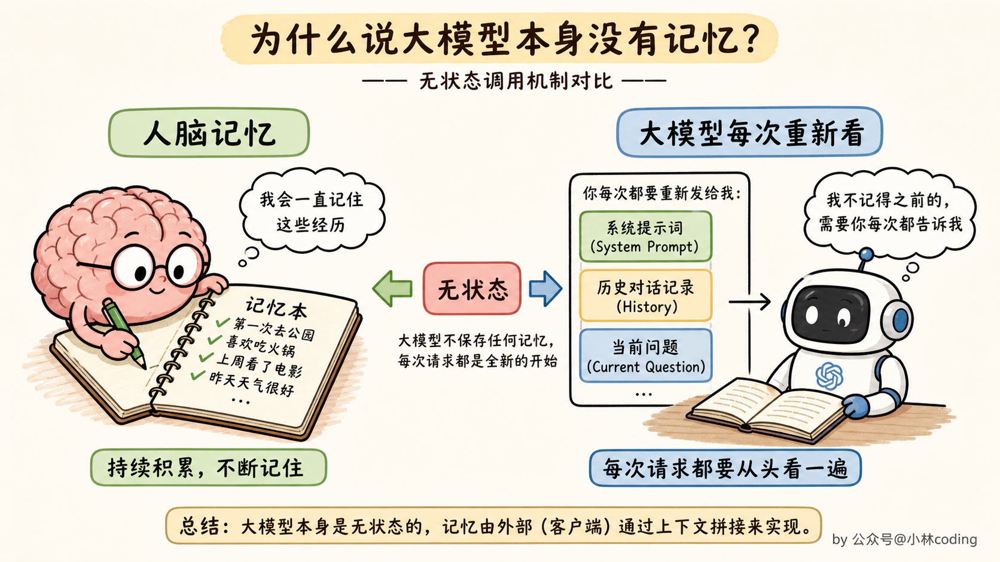
你以为它记得，其实是因为你的客户端（比如 ChatGPT 的网页前端）偷偷把历史消息又一起发了过去。所谓「上下文窗口」，就是塞这些消息的最大长度。
打个比方，LLM 就像一只金鱼，记忆只有 7 秒。你跟它说完话，它转个身就忘。如果你想让它记得，得每次开口前先把过往对话再念一遍。
聊天场景下，这套办法还能凑合。毕竟聊天就是「你一句我一句」，每轮也就几百个 token（token 你可以粗略理解成模型眼里的「字」，一个汉字大概算一到两个 token），把历史全念一遍也撑得住。但放到 agent 上，就完全不够用了。
agent 真正缺的是哪种记忆
agent 跟聊天最大的不同，是它在长跑。
调工具、读文件、调 API、再调工具、再读文件……跑着跑着上下文就爆窗口了。你不能指望它「每次都把昨天的对话全念一遍」，那点窗口光塞历史都不够。
更关键的是，agent 想记住的东西，跟「历史对话」其实不是一回事。
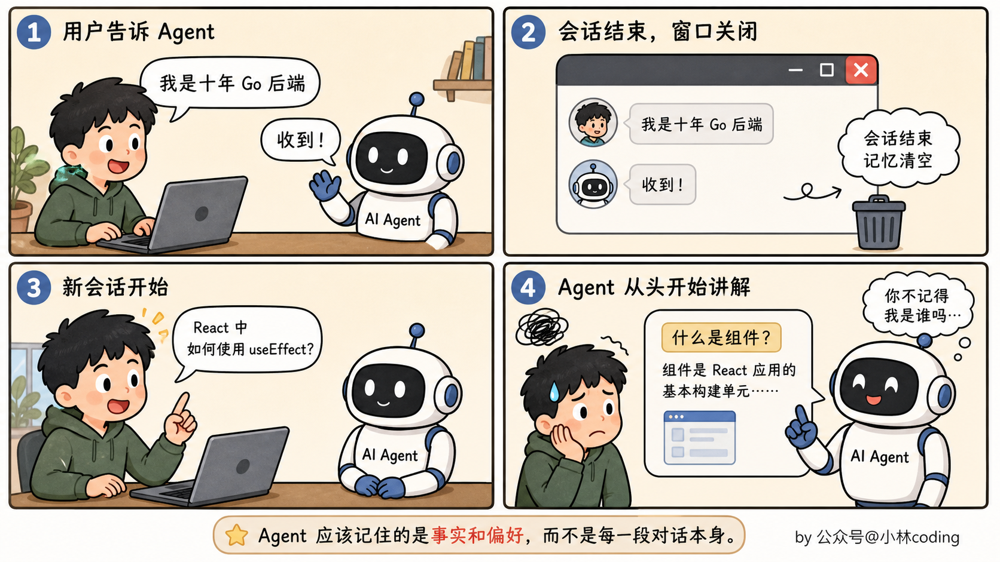
你昨天可能说过一句「我是十年 Go 后端，第一次接触 React」。今天打开新会话问它一个前端问题，你希望它记住的是「这个用户后端经验丰富但前端是新手」这个事实本身，而不是「你昨天说过那句话」。这两者天差地别。
再举个例子。你跟 agent 强调过「测试别用 mock，要打真实数据库」。下次写测试你希望它直接照做，而不是你重新强调一遍。这种「规则类」的记忆，跟「对话历史」更是完全两码事。
所以你看，agent 真正想记住的，大概是这几类东西：
- 用户画像：你是谁、擅长什么、知识水平如何
- 行为偏好：你不喜欢什么，喜欢什么
- 项目动态：当前项目要干啥、有什么截止日期
- 外部指针：去哪查什么信息
光靠把对话历史存起来，再搞个 RAG 检索（RAG 即「检索增强生成」，先去资料库里查到相关内容、再拼进上下文给模型参考），根本解决不了上面这些问题。
我觉得一个更贴切的比喻，是把 LLM 想象成一个得了失忆症的实习生。
这个实习生很聪明，写代码、查资料、做调研样样都行。但他每天早上一来上班，啥都不记得。你必须在他工位上贴满便签：「你叫某某某」「这是你正在做的项目」「老板不喜欢 PPT 用斜体」……否则他每天都从零开始，干一天还干不出昨天的进度。
那「记忆机制」要解决的核心问题，就变成了：这些便签贴在哪、谁来贴、什么时候撕掉。
在盘点之前，还得再说清一件事，免得后面看糊涂：记忆其实分两种。
一种是短期记忆，说白了就是上下文窗口本身，装着当前这轮对话；窗口快满了，就把旧消息压缩（compaction）一下腾地方。前面讲的「把历史重新念一遍」，管的就是它。另一种是长期记忆，持久化存到磁盘、能跨会话活下来；前面说 agent 真正缺的那四类东西（用户画像、偏好、项目动态、外部指针），全属于这一类。
这篇文章重点拆的 Claude Code 记忆机制，是长期记忆这一半。至于短期那套怎么压缩上下文，我之前专门写过一篇（点这里查看），这篇就不展开了。
记好这条坐标轴。业界给 agent 做记忆这件事，实打实研究了十几年，方案五花八门，可惜大部分都不太够看。下面就来盘点一下，你会看到有的方案在管短期、有的在管长期，但没一个真正够用。
二、业界主流的记忆方案为什么不够看？
讲 Claude Code 之前，我想先让你做一件事。
假设老板现在拍着桌子让你给一个 agent 加记忆机制，你会怎么设计？闭上眼想 30 秒。
我猜你脑子里大概会冒出这几个思路：
- 把最近几轮对话直接存下来？
- 太多了就用 LLM 总结一下？
- 上向量数据库做相似度检索？
- 学操作系统，分热的常驻、冷的归档？
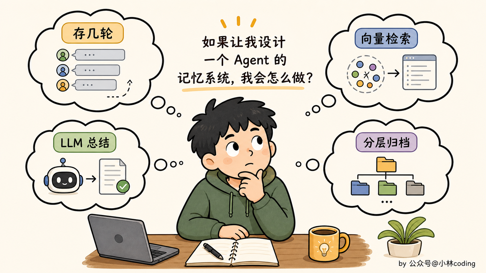
很正常，你能想到的，业界全部都试过。GitHub 上扒一扒开源 agent 框架，记忆机制大概就这四类。
我们一个一个过一遍，过完你会发现一件挺有意思的事：这些「看上去都很合理」的方案，真用起来全都不太够。
方案一：滑动窗口 Memory
最直观、最暴力的一种。
原理是把最近 N 轮对话原样保留，超过 N 轮的就丢掉。LangChain 早期那个 buffer window memory 就是这思路（在新版本里这套已经被官方标记弃用了，但思路依然散落在很多框架里）。
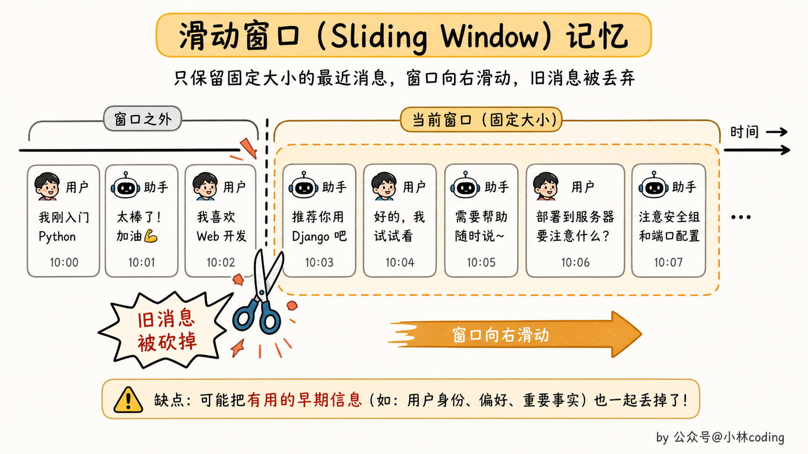
听上去合理对吧？反正窗口有限，丢就丢呗。
但有个问题，你丢的不一定是没用的。
举个例子。用户在第 1 轮说「我是后端工程师」，然后跑了 50 轮各种问答，第 51 轮问「这段 useState 怎么用」。滑动窗口一砍，「我是后端工程师」这句早就不在窗口里了。agent 给你按零基础前端讲，你还得再花两轮告诉它「我有十年开发经验」。
关键信息和无关信息混在一起被丢，是滑动窗口的硬伤。
方案二：对话摘要 Memory
那再聪明点。不直接砍，而是定期把旧对话用 LLM 总结一下，把摘要塞回上下文。对应 LangChain 早期的 summary memory。
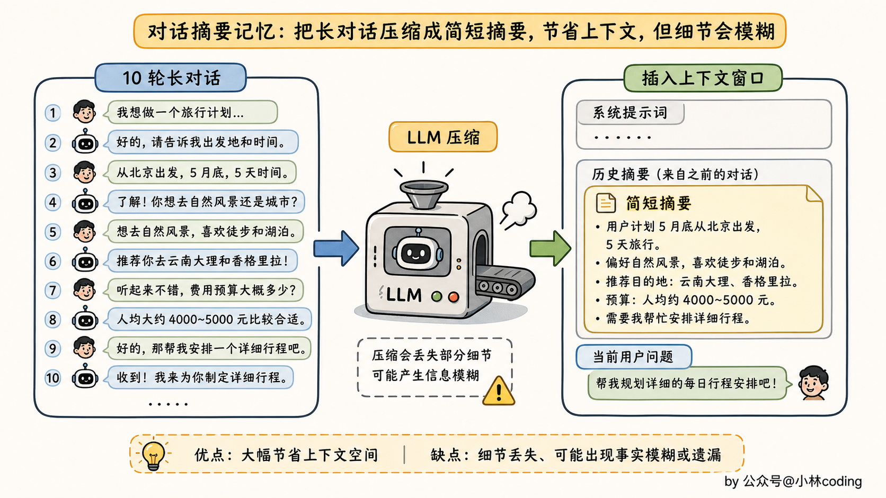
这样原文丢了，但「精华」保留下来了。
听起来还不错？我们看个真实场景。
假设用户在 20 轮前说过一句「我们的 API gateway 用的是 Kong，不是 nginx」。LLM 做摘要的时候觉得这句不太重要，就压成了「讨论了一些技术栈细节」。等下一次你问「我们的 API gateway 怎么排查 502」，agent 完全不知道你用的是 Kong，按 nginx 给你答了一通。
重要的细节被压糊，这是摘要 Memory 的硬伤。而且 LLM 做摘要本身要耗 token、有延迟，每隔几轮就摘一次，成本不低。
方案三：向量检索 Memory
这是目前最热的方案。Mem0、Letta（原名 MemGPT）、Zep，甚至大部分自己搓的 agent 都是这思路。
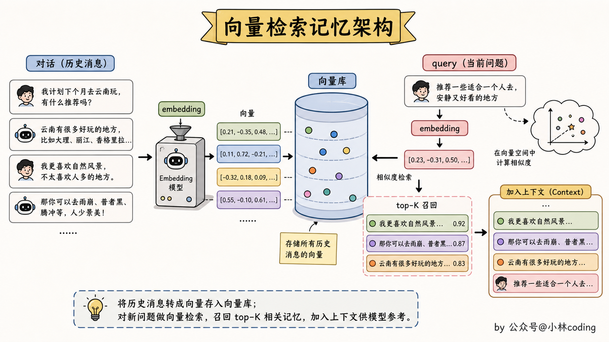
先说清楚 embedding 是什么。你可以把它理解成，给每段文字在一个高维空间里标一个坐标，意思相近的两段话，坐标也会靠得近。
向量检索就是基于这个坐标做文章。它把每条对话或每条记忆转成 embedding 向量（也就是上面说的那个坐标），存进向量数据库。每次新对话来，先把用户当前的问题（query）也转成向量，然后跟数据库里所有记忆比一比坐标远近，召回最相似的前 K 条（业界叫 top-K）塞回上下文。
Mem0 是这条路上最响的选手，按他们 2025 年 4 月那篇论文（arxiv 2504.19413）的数据，在 LoCoMo 这个长对话记忆基准上能打到 91.6 分，落地框架也覆盖了一大票。
听上去这方案是不是无懈可击？我给你泼盆冷水。
第一个问题，相似不等于相关。你问「这段代码有没有 bug」，向量检索可能把过去所有讨论 bug 的对话都召回来，但其中只有一两条跟当前代码真正相关，剩下的全是噪音。模型一被噪音淹没，就开始胡言乱语。
第二个问题，召回不稳定。embedding 模型换一个，召回结果差别巨大。你今天用 OpenAI 的 embedding 表现好好的，明天换成开源的，记忆系统可能从「能用」变「不能用」。
第三个问题，维护成本高。要部署向量数据库（pinecone、qdrant、milvus 任选一个），要选 embedding 模型，要管 chunk 大小，要管索引更新，要管冲突合并……上线一套向量记忆系统，工程量比写 agent 主流程还大。
第四个问题最致命，用户没法看。你存进向量数据库的记忆是一堆 768 维浮点数，人脑根本读不懂。哪天 agent 给你召回了一条错的记忆，你想去看看是哪条记忆引起的？对不起，先把向量反查回原文，还要 debug 一通索引。
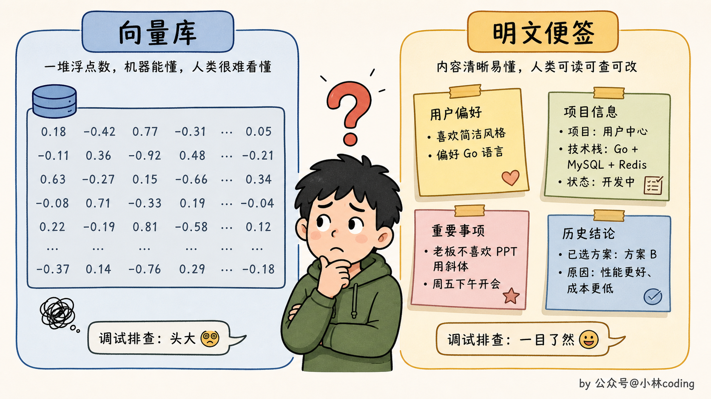
方案四：分层存储 Memory
MemGPT（现在叫 Letta）那一派的方案。
原理是把记忆分成几层：core memory（常驻上下文）、recall memory（最近对话可召回）、archival memory（远期归档）。LLM 自己当操作系统，用工具调用主动在不同层之间搬数据。
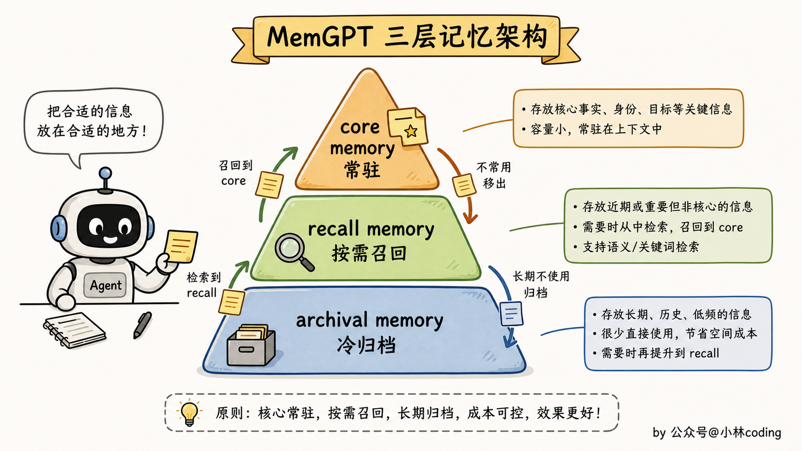
这套设计学术上确实漂亮，但工程上落地的反馈是「概念太多、迁移成本太大」。让 agent 自己管理三层记忆，意味着每个 prompt 都要训练它什么时候搬、搬哪条，复杂度直接翻倍。
而且分层归分层，搬数据的依据本质上还是「相关性匹配」，依然要靠 embedding 召回，前面那几个硬伤一个都没躲过去。
这四类方案的共同病根
你把四个方案摆一起，会发现它们其实有几个共同的硬伤。
第一，自由文本无约束。存什么、不存什么没规则，结果记忆库迅速膨胀成垃圾堆。
第二，不区分类型。「用户画像」「项目动态」「外部指针」全部一锅炖、用同一种方式检索，最后哪个都查不准。
第三，没有老化机制。一条记忆存进去就是永久的。今天你跟 agent 说「我们项目用 Kong」，半年后换成了 nginx，旧记忆还在告诉它你用 Kong。这种「权威的错误」比没记忆还糟糕。
第四，重检索、轻写入。所有方案都把精力花在「怎么查到」，但「该不该存」「存什么」这一步基本是放任的，导致垃圾进、垃圾出。
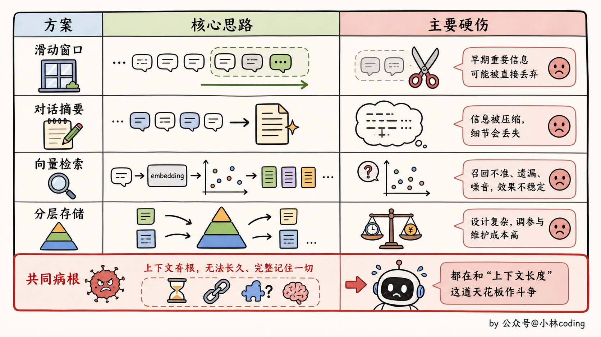
带着这四个病根，我们来看 Claude Code 是怎么治的。
三、Claude Code 的两层记忆架构鸟瞰
那 Claude Code 是怎么避开这些坑的？
你可能会期待一个特别炫的方案，比如自研一个混合存储、训一个专门的记忆模型、上一套分布式索引。
但答案恰恰相反。Claude Code 走了一条「土到反直觉」的路。
它没用向量数据库，没用 embedding，没用任何复杂的存储引擎。它用的是磁盘上的 markdown 文件。
是不是想笑？markdown 文件能管好记忆？
别急。等你看完整套机制，你会明白为什么这个看着「土」的方案，反而把向量检索那一套比了下去。
讲细节之前，先给你一张地图，否则一头扎进源码容易迷路。
Claude Code 的记忆机制其实是两条独立的线，并行工作：
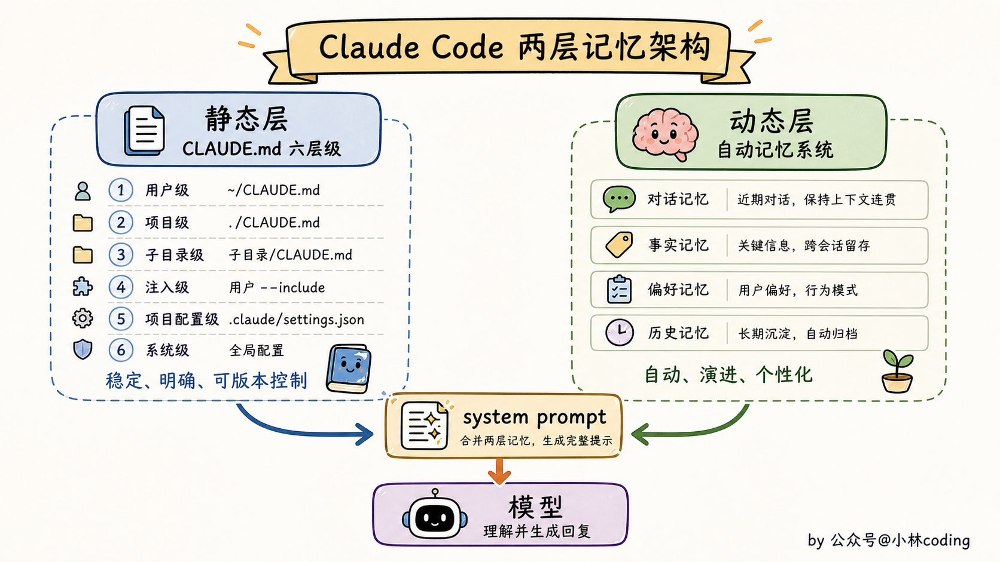
静态层是 CLAUDE.md 体系，本质是「声明式指令」。你写好放那里，agent 启动时全量加载。这一层解决的是「我们怎么协作」「这个项目要遵守什么规则」这种确定性的事情。
动态层是自动记忆系统，本质是「学习式偏好」。agent 在跟你互动的过程中，把它认为「值得记下来的事」自动写成记忆文件存到磁盘上，下次对话再按需检索。这一层解决的是「我从跟你的互动中学到了什么」这种不确定的事情。
打个比方，静态层就像你工位上的「公司员工手册」，每个新员工入职都得看一遍；动态层就像你工位旁那本「自己的工作笔记」，写的是「老板不喜欢 PPT 用斜体」「张三的需求经常变」这种你慢慢摸索出来的东西。
两层一起用，才是 Claude Code 记忆机制的完整答案。
接下来两节我们各自展开，先看静态层。
四、静态层： CLAUDE.md 的六个层级
很多人对 CLAUDE.md 的印象停留在「项目根目录放一个 md 文件，写点项目说明」。但你打开 Claude Code 源码就会发现，CLAUDE.md 这套体系远比你想的复杂。
为什么不能只有一个 CLAUDE.md
我们先想一个问题，如果只有一个 CLAUDE.md，会发生什么？
你很快会发现，想往里塞的「规则」根本不是同一个来源。公司级的强制策略（比如「禁止 commit secrets」）得全员生效、谁也改不得；你个人的习惯（比如 commit message 用中文）希望跨所有项目通用；项目自己的规则要签入 git、给团队共享。
还有几类更微妙的。本地调试用的约定不想签入 git，只想在自己机器上读到；团队一起摸索出来的经验，希望同步给所有成员；以及 Claude Code 自己从对话里学到的你的偏好，也总得有个地方落下来。
这六种来源，可见范围不同、谁能改也不同，硬塞进一个 CLAUDE.md 只会要么打架要么混乱。所以 Claude Code 索性把它拆成了六个层级。
六个层级各管一摊
按加载顺序从低到高，长这样：
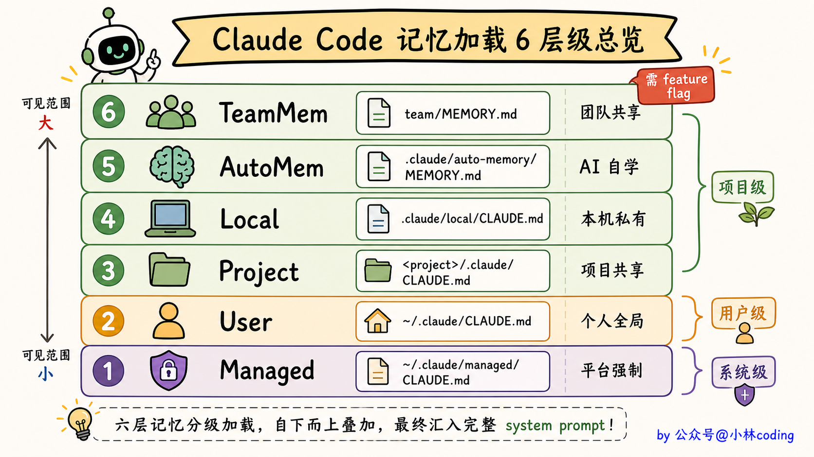
每一层的定位都很明确：
- Managed：放在系统级路径，只有管理员能改。公司级强制策略走这层
- User：放在用户家目录下，你自己的全局偏好走这层，无论在哪个项目都生效
- Project：项目根目录的
CLAUDE.md或.claude/CLAUDE.md，项目层规则，签入 git 让团队共享 - Local：项目根目录的
CLAUDE.local.md，默认不签入 git，你自己用 - Auto（源码标识符
AutoMem）：项目级的自动记忆目录，Claude Code 自动写入的偏好，下一节单独展开 - Team（源码标识符
TeamMem）：在 Auto 目录下再开一个team/子目录，团队共享的 AI 学到的偏好（需要 feature flag 开启）
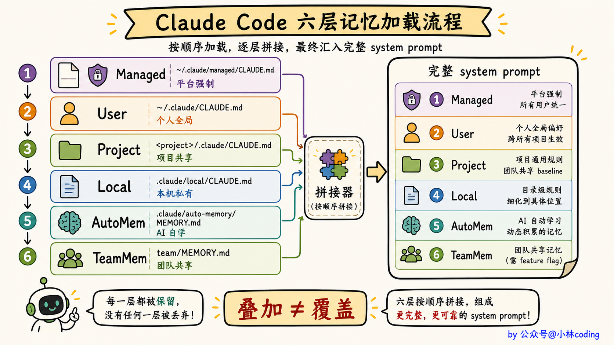
你可能注意到了，后两层 Auto 和 Team 存的其实是 MEMORY.md 文件，不是 CLAUDE.md。这里把六层统称「层级」，是因为它们同属一套加载体系、最后都拼进 system prompt，不必纠结文件名的差别。
六层之间是叠加关系不是覆盖关系。Claude Code 启动时把它们全部拼接进 system prompt，让模型一起看到。
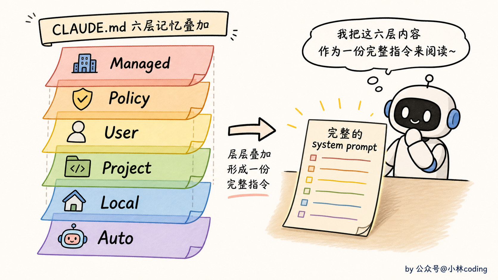
@include：让 CLAUDE.md 互相引用
光分层还不够，还有个实际问题。
假设你们公司有一份「通用安全规范」，每个项目都得遵守，难道每个项目的 CLAUDE.md 都把它复制一遍吗？
太蠢了。
Claude Code 给的方案是 @include 指令。
你在 CLAUDE.md 里写一行 @~/company/security-rules.md，加载的时候它就自动把那个文件的内容读进来拼上，思路跟 C 语言的 #include 一模一样。
当然，背后还得防循环引用、防路径遍历这些工程坑，这里就不展开了。
条件规则：编辑 .tsx 才加载前端规范
层级和 @include 都讲完了，再看一个挺有意思的设计。
如果你给项目写了一份很长的前端规范：React Hooks 用法、CSS 命名规则、Tailwind 配置原则……几百行。
但你只在编辑前端代码的时候才需要这套规范，编辑后端代码也加载，纯粹浪费 token。
Claude Code 在 .claude/rules/ 这个目录下支持条件规则。每条规则是一个独立的 md 文件，文件 frontmatter（md 文件开头用 --- 框起来的那段元数据）里可以写一个 paths 字段，用 glob 通配符（就是 *.tsx 这种写法）匹配：
---
name: 前端规范
description: React + Tailwind 项目规范
paths: ["**/*.tsx", "**/*.jsx"]
---
# 前端规范
...（规则正文）
加载的时候，Claude Code 会比对当前编辑的文件路径，只有匹配上的规则才会被拼进 system prompt，匹配不上的就跳过。
这个设计的妙处在于，它让 CLAUDE.md 不再是「一次性全塞」，而是「按需注入」。一个大项目可以有几十条规则，每条只在它真正需要的时候才占用 token，整体上下文窗口就省下来了。
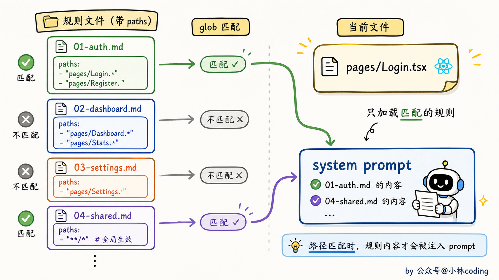
截断双保险：防长行索引炸弹
最后聊一个跟安全有关的小设计，挺巧的。
MEMORY.md 索引文件（下一节会讲是什么）要塞进 system prompt，所以必须有大小上限，否则索引膨胀就把上下文撑爆了。
按常规思路，限制行数就行了，比如「最多 200 行」。但 Claude Code 团队发现，有时候一条索引就是一行超长字符串。代码里有句注释：
p100 observed: 197KB under 200 lines
什么意思？他们观察到的极端情况是，一个 MEMORY.md 只有不到 200 行，但加起来 197KB。光看行数完全察觉不到，但塞进 system prompt 就是个灾难。
所以 Claude Code 用了双保险：
export const MAX_ENTRYPOINT_LINES = 200
export const MAX_ENTRYPOINT_BYTES = 25_000
两个限制任意一个先触发，就截断。截断的时候还会主动追加一条警告告诉模型「这个索引被截过了，部分内容没加载进来」，让模型自己有数。
这种「行数 + 字节」的双截断，本质上是在防御「长行索引炸弹」这种特殊形态的上下文溢出。在做 agent 项目的时候，凡是用户可控的文本要进 system prompt，都建议参考这种双保险设计。
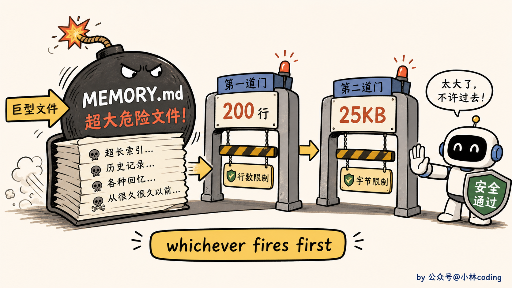
静态层讲完了，但真正有意思的是动态层，下一节是文章的重头戏。
五、动态层：自动记忆系统的完整闭环
如果说静态层是「框架」，那动态层就是 Claude Code 的真正灵魂。
为什么还需要动态记忆
CLAUDE.md 这套体系再完善，也有一个根本局限：得你主动写。
你昨天跟 Claude 抱怨「这个 mock 测试又骗过 CI 了」，今天换会话再写测试，它依然得你重新强调「别用 mock」。CLAUDE.md 又不会自己长出新内容。
理想的状态应该是：Claude 在跟你聊天的过程中，自动把它学到的东西记下来，下次你不用再说一遍。
这就是动态层要解决的问题，让 agent 自己学、自己写、自己用。
听起来像 RAG 那一套对吧？但 Claude Code 做得很不一样。它没有用向量数据库、没有用 embedding，而是用了一套结构化的文件系统 + LLM 选择。
我们一步步拆。
四种类型为什么这么分
要让 agent 自己写记忆，第一个问题就是：让它写什么？
你可能会想，「记下来对我有用的就行了呗」。
但「对我有用的」是个模糊到没法落地的标准。我们设想一下，如果你放任 agent 自由发挥，它一天能写出哪些东西？
它可能会记「用户今天问了 React 的问题」（流水账没用）、「这个函数用了 useMemo」（代码里 grep 一下就有）、「上次帮用户改了 5 行代码」（活动日志没用）……
三天下来，记忆库就成了一个啥都有、啥都查不准的垃圾桶。
那怎么办？
Claude Code 的答案干脆利落：只允许四种类型，其他一律不许写。
export const MEMORY_TYPES = [
'user',
'feedback',
'project',
'reference',
] as const
短短四个词，背后的设计哲学非常重，我们来拆。
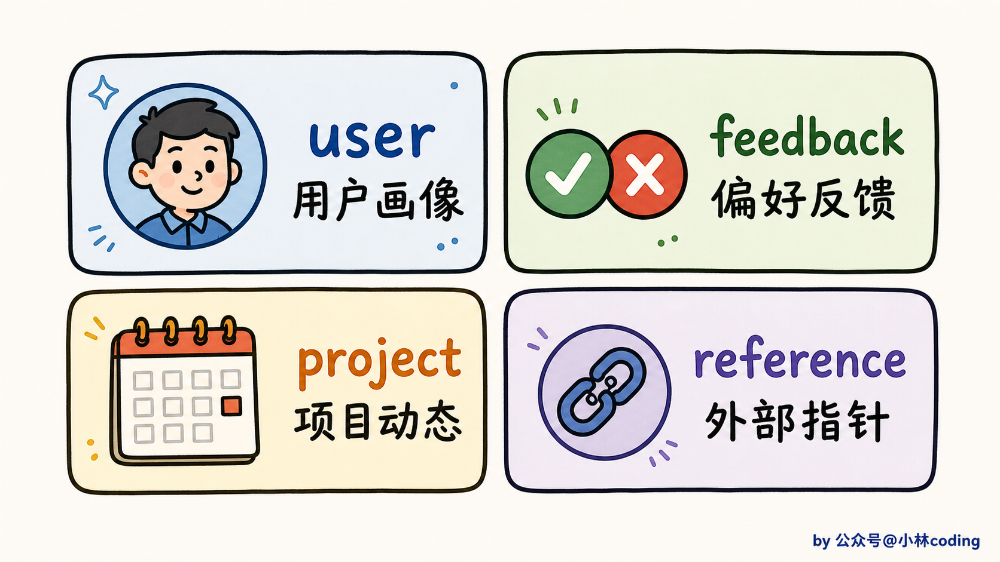
user 用户画像，记的是「你是谁」。比如「这位用户写了十年 Go，刚接触 React」。这类记忆让 agent 的回答因人而异，对老兵和新手用完全不同的解释方式。
feedback 行为偏好，记的是「你不喜欢什么 / 你确认有效的做法」。比如「这位用户不希望每次回复后做总结，diff 就够了」。这类记忆是 Claude Code 最看重的一种，因为它直接决定了 agent 下一次行为的对不对。
feedback 类型有一个强制结构，正文必须包含三段：
规则本身
**Why:** 用户为什么这么要求（往往是踩过的坑）
**How to apply:** 什么情况下生效
为什么这么严？因为只记规则不记原因，遇到边界情况就抓瞎。比如「不要用 mock 测试」，单纯一句话不够，加上「上季度 mock 测试通过但 prod 迁移挂了」这个 Why，agent 在边界情况下就能自己判断这个 case 该不该破例。
project 项目动态，记的是「项目正在发生什么」。比如「移动端 3 月 5 号开始合并冻结」。
这类记忆其实跟 feedback 一样吃同一套强制结构：开头是事实/决定，然后 Why（这事为什么发生，是哪条约束或截止日期推动的）、How to apply（这件事应该怎么影响 agent 的建议）。Claude Code 把这套约束同时套在 feedback 和 project 上，是因为这两类记忆最容易过期、最需要让 agent 自己判断「现在还该不该信」。
除此之外，project 还有个怪要求：必须把相对日期转成绝对日期。用户说「周四之前冻结」，存进去要变成「2026-03-05 之前冻结」。原因很简单，「周四」过几天就过期了，「2026-03-05」永远准确。
reference 外部指针，记的是「去哪查什么」。比如「pipeline bug 都在 Linear 的 INGEST 项目里追踪」。agent 不需要知道外部系统的具体内容，只需要知道去哪里找。
四种类型限定死了，记忆系统的「信息形态」就有了纪律。每次想存一条记忆，agent 必须先想清楚「这属于哪一类」，而不是一股脑往里塞。
该存什么 vs 不该存什么
跟「该存什么」同样重要的，是「不该存什么」。Claude Code 在系统提示词里明确列了一份禁令清单。
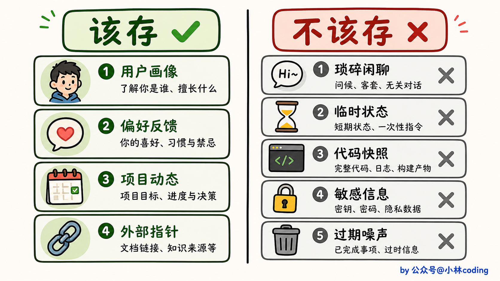
不该存的有这些：
- 代码模式、架构、文件路径、项目结构（用
grep/CLAUDE.md就能得到，存了反而和实际状态不一致） - Git 历史和最近改动（
git log/git blame是权威，记忆只会落后于真相） - 调试方案和修复方法（fix 已经在代码里，commit 已经记录了上下文）
- CLAUDE.md 里已经写过的内容
- 临时任务状态和当前对话上下文
为什么这条「不该存」清单这么重要？
因为代码是「活的」，记忆是「死的」。代码随时在变，但一条记忆存进去就定格了。如果记忆说「AuthService 在某个具体路径第 42 行」，但代码已经重构了，这条记忆就变成了一个「权威的错误」，比没有记忆还糟糕。
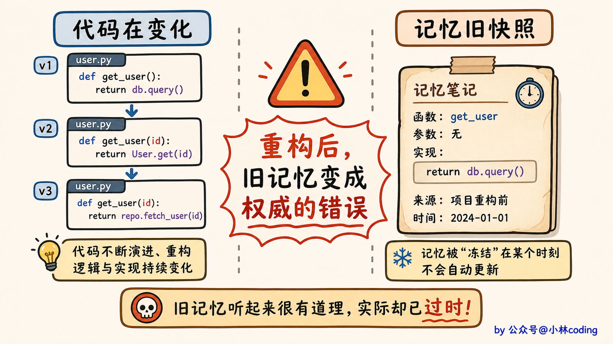
所以记忆系统的纪律是：只记代码推不出来的东西。这个原则贯穿了整套设计。
存储设计：单文件 + 索引
类型定下来了，下一个问题来了。
假设你已经积攒了 50 条记忆，它们放哪里，怎么让模型知道？
最直觉的做法，全部塞进 system prompt。但你算一下，50 条每条 200 字，就是 1 万字、几千 token，system prompt 直接被记忆撑爆。
那反过来呢，完全不塞？那模型根本不知道有这些记忆可用，写了等于白写。
两难。
我们先看 Claude Code 怎么平衡。每条记忆是一个独立的 .md 文件，文件头有一段 YAML frontmatter：
---
name: 不要用 mock 数据库
description: 集成测试必须连真实数据库
type: feedback
---
集成测试必须连真实数据库，不要用 mock。
**Why:** 上季度 mock 测试通过了但 prod 迁移挂了
**How to apply:** 所有标了「集成测试」的 case 都适用
frontmatter 里的三个字段是「身份证」：name 是标识，description 是「这条记忆是啥」（这一句话非常重要，决定了它能不能被检索到），type 是四种类型之一。
所有记忆文件放在一个目录下，目录里还有一个特殊文件 MEMORY.md，是所有记忆的索引清单。
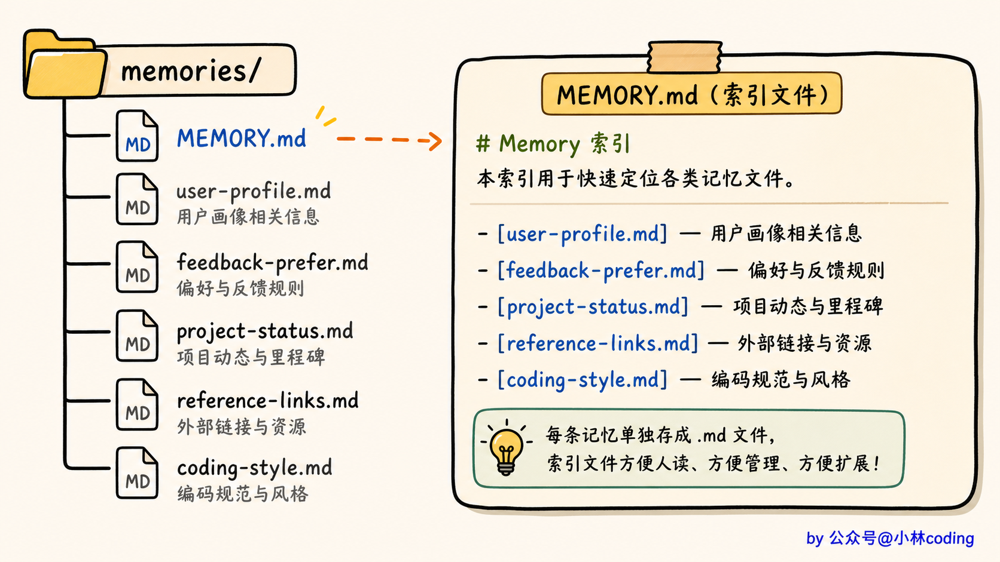
这里有一个很关键的设计，回到刚才那个两难问题，Claude Code 的答案是：只塞「目录」，不塞「正文」。
MEMORY.md 索引 → 始终加载进 system prompt
独立记忆文件 → 按需加载
是不是有点像翻一本厚厚的工具书？你不需要把整本书背下来塞脑子里，但至少得知道目录里都有哪几章，需要某章再翻到那一页。
落到 Claude Code 上就是：
- agent 看到索引就知道有哪些记忆可选（看 name 和 description 就够）
- 真正需要某条的时候，再把完整内容加载进来
这个设计还顺带解决了上一节提到的「截断双保险」问题：索引始终常驻，所以索引的大小必须严格控制，行 + 字节双限制就是这么来的。
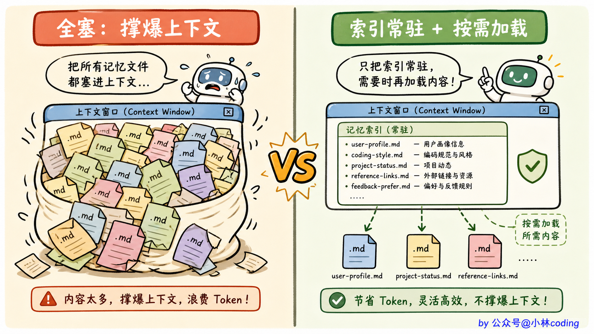
写入：Extract Memories 代理
光设计好类型和存储格式还不够。记忆是怎么写进去的？
最朴素的做法你应该想到了，让主对话自己写呗。每轮结束让模型「想想这次有啥该记的」，然后自己写文件。
听上去合理。但你再仔细想想，会不会有坑？
至少两个坑很明显：
第一个，模型分心。主任务都做不好，还要分一脑子去想「这条要不要记、属于哪类、放哪里」，回复质量会打折。
第二个，token 浪费。每轮都得在 system prompt 里塞一段「记一下偏好啊」的指令，每次都进、每次都算钱，全是冗余。
那 Claude Code 怎么躲开这两个坑？
它的方案是：每轮对话结束后，后台单独跑一个代理来抽取记忆。
这个代理叫 extractMemories，触发时机是每轮 query loop 完整结束（也就是模型给出最终回复、没有任何 tool call 了），通过一个 stopHook 钩子触发。
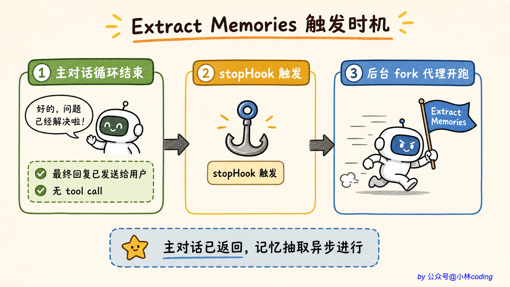
源码注释把它的精髓讲得很清楚：
// Uses the forked agent pattern (runForkedAgent) — a perfect fork of the main
// conversation that shares the parent's prompt cache.
这里有个很妙的小心思。Extract Memories 代理不是从零启动一个新对话，而是「完美 fork（复刻一份）主对话」，复用主对话的 prompt cache（把已经算过的 system prompt 缓存下来，下次不用重算）。
这意味着什么？意味着它不用重新加载几千 token 的 system prompt，只需要看着对话历史，决定「这次有没有值得记的东西」就行。整个抽取过程多花的钱很少。
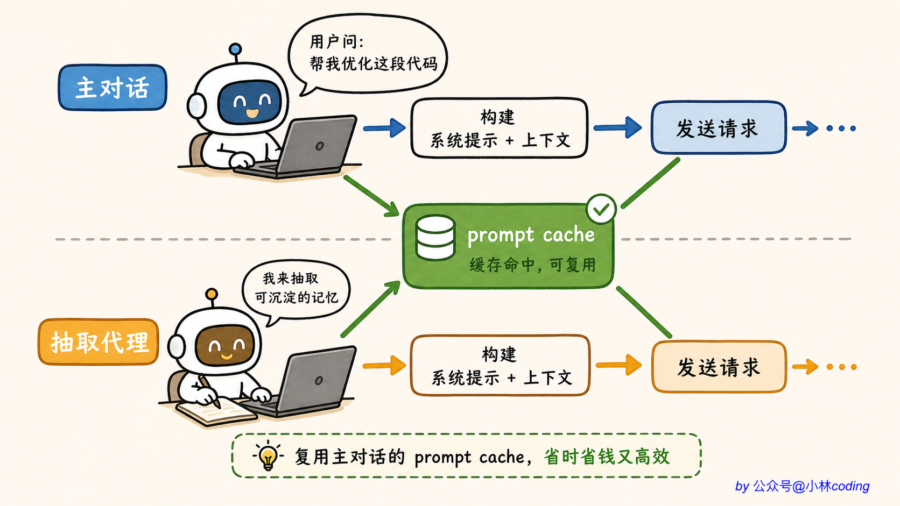
抽取代理的逻辑大致是：
- 扫一遍这一轮对话里用户的反馈、纠正、信息
- 跟现有记忆比对，看有没有重复
- 如果有新的值得记的内容，按四种类型分类，写一个新文件
注意「跟现有记忆比对」这步。代理会主动检测 hasMemoryWritesSince，过滤掉它刚刚写过的内容，避免对同一件事反复写记忆。
还记得第二章那四个病根吗？其中一个是「重检索、轻写入」，所有方案都在琢磨「怎么查到」，却放任「该不该存、存什么」。Claude Code 专门派一个后台代理来干「写入」这件事，本身就是在治这个病根。
检索：用 Sonnet 选 top-5
存储讲完了，下一个问题来了。
下次对话来的时候，假设你有 100 条记忆，怎么挑出最相关的 5 条塞给主模型？
你脑子里第一反应，大概是向量检索对吧？给每条记忆做个 embedding，给 query 也做个 embedding，算相似度、召回 top-5，干脆利落。
合情合理。但 Claude Code 偏偏不这么干。
它的做法反直觉到你可能根本没往这上面想过，让一个小模型来挑。
具体怎么挑？逻辑写在 findRelevantMemories 里。
第一步，扫描所有记忆文件的「头部信息」。它只读每个文件前 30 行，足够提取 frontmatter，不会读取记忆完整内容。这样即使有 200 个记忆文件，扫描开销也很小。
第二步，把所有记忆的「标题清单」拼成一段文本，发给 Sonnet：
Query: 用户当前的问题
Available memories:
- user_role.md — 后端工程师，新接触 React
- feedback_no_mock.md — 测试不要用 mock
- project_freeze.md — 3 月 5 号开始合并冻结
...
第三步，让 Sonnet 用 JSON schema 返回 top-5 文件名。系统提示词写得非常严苛：
Only include memories that you are certain will be
helpful based on their name and description.
Be selective and discerning.
意思就是「不确定的就别选」。宁可少选，不可错选。
为什么是 Sonnet 不是 Haiku？Haiku 更便宜啊。
我的理解是：Sonnet 比 Haiku 准很多，记忆相关性判错的代价远大于多花的那点钱。一旦把错的记忆塞进上下文，整个回复都会被污染。这道选择题的容错率非常低，所以宁可贵一点也要选准。
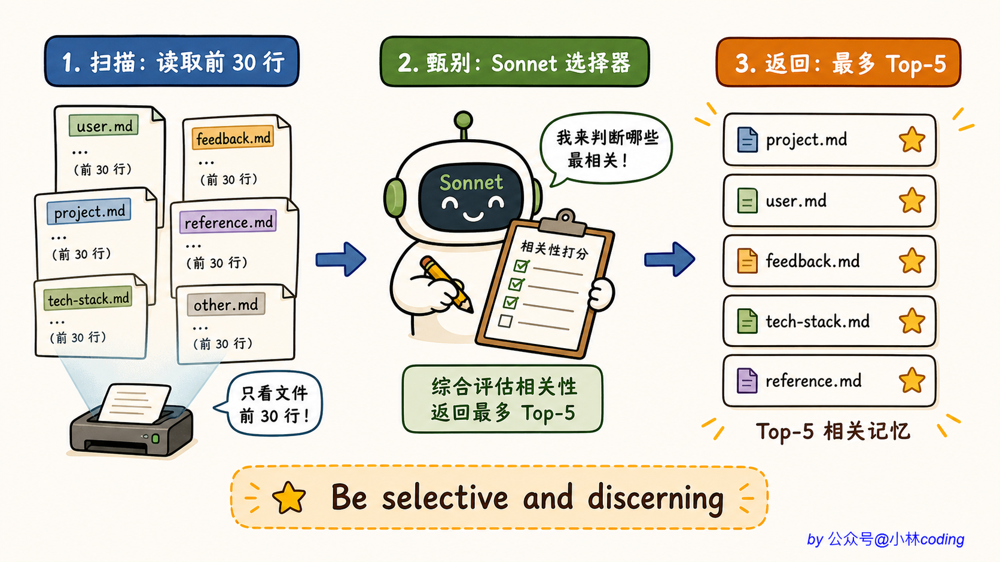
还有几个细节值得讲。
alreadySurfaced过滤：上一轮对话已经露过脸的记忆，这次直接排除。让 Sonnet 把 5 个名额花在新候选上，而不是反复挑同样的。recentTools过滤：最近用过的工具的「用法参考文档」不要选。因为 agent 当前对话里已经在实际使用这些工具了，再塞一份文档纯粹是噪音。但工具的「警告、坑点、已知问题」记忆要保留，「正在用」的时候恰好是这些警告最该出现的时候。
这两个细节看着小，但反映的是一个非常成熟的产品思维：检索不只是匹配，还要看「当前上下文已经有了什么」。
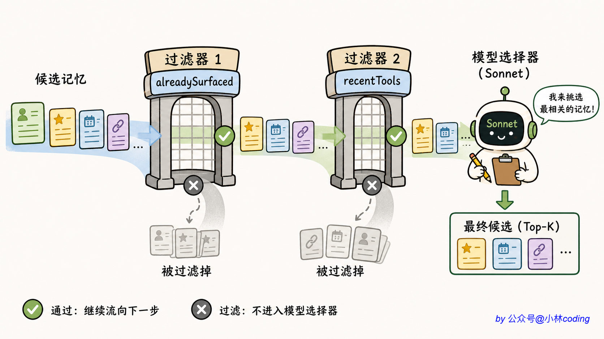
注入：system-reminder 包裹 + 老化警告
记忆被选出来之后，怎么塞进对话？
直接拼到 user message 里？不行，模型可能把它当成「用户刚说的话」。
Claude Code 的做法是用 <system-reminder> 标签包裹后注入：
<system-reminder>
This memory was saved 5 days ago. Verify it's still accurate before acting on it.
[记忆内容]
</system-reminder>
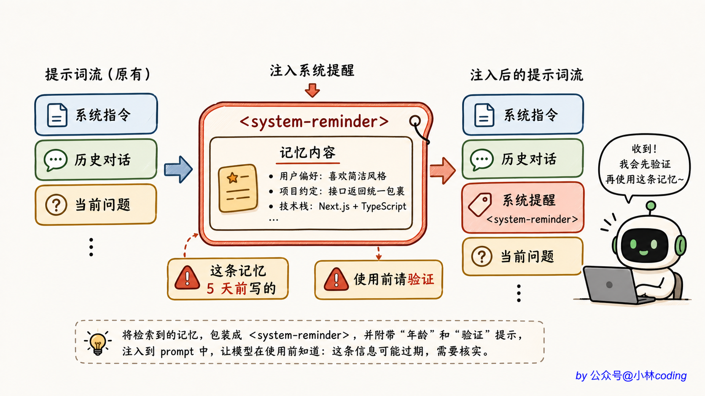
注意上面那句「This memory was saved 5 days ago」。这就是记忆老化的设计：
今天 / 昨天 → 不警告
2 天以前 → 主动加警告，提醒模型「这是过去的快照」
为什么 2 天就警告？
因为软件开发节奏快，两天前的「项目正在做 X」可能今天就已经改了。让模型见到记忆的时候，自动带着「这是历史，不是现状」的心态去用。
这一条警告解决了向量检索方案最致命的问题，「权威的错误」。当一条记忆过时了，agent 不是闭着眼睛信，而是会主动去验证（比如 grep 一下、读一下当前文件状态），发现冲突就更新或忽略它。
Claude Code 还有专门一段「Before recommending from memory」的提示词，明确告诉模型：
- 如果记忆里写了文件路径，先检查文件是否存在
- 如果记忆里写了函数名或 flag，先 grep 一下
- 如果用户要照你的建议动手了，先验证再说
「记忆说 X 存在」不等于「X 现在存在」，这句话写得非常重。
完整闭环图
到这里，自动记忆系统的完整闭环就讲完了。我们把它串成一张图：
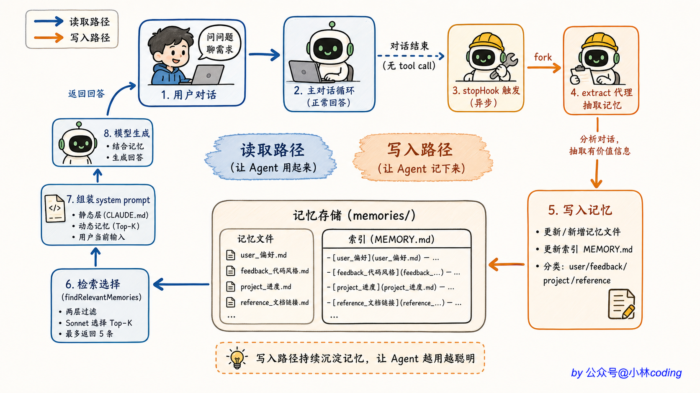
抽取在右边、检索在左边，一写一读，记忆系统转起来。
而最妙的是，整套机制没有一行 embedding、没有一个向量数据库，全是结构化文件 + 一个小模型当选择器。简单，但比向量检索好用得多。
六、几个值得借鉴的设计选择
读到这里，你不妨再停一下。
把上面 Claude Code 的整套机制盖住，闭眼回想一下：你能从里头抽出几条「可以抄到自己 agent 项目」的原则吗？
试着自己列一列，再往下看。
我自己看完源码，抽出了四条。你可以对照着看，跟你想的一不一样。
第一条：结构化优于自由文本
Claude Code 不让记忆是「自由文本流」，而是强制四种类型 + 强制 frontmatter。
为什么这么重要？因为自由文本无约束 = 垃圾堆。三个月后回头看自由文本的记忆库，你会发现里面什么都有，什么都查不准。
强制类型的本质是逼 agent 在写之前先做一次「分类决策」：这条信息属于「用户画像」还是「行为偏好」？是「项目动态」还是「外部指针」？想清楚才能写，写下来的东西就有用。
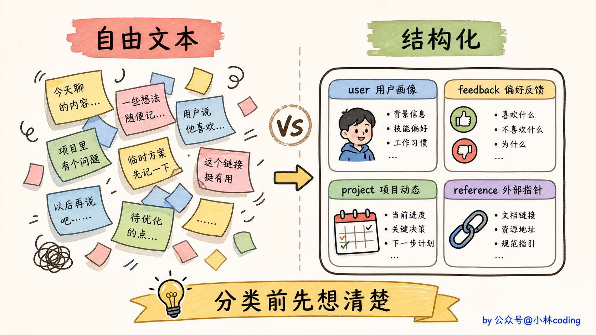
迁移到自己的项目，这条原则可以变成：给记忆定一个 schema，强制每条都填齐。哪怕只是 4 个字段，比啥都不要强一百倍。
第二条：索引常驻 + 内容按需
这是我最喜欢的一个设计。
「全塞进 system prompt」会爆窗口，「完全不塞」agent 又不知道有什么。中间这道平衡，Claude Code 用一个 MEMORY.md 索引解决了：
- 索引始终在 system prompt 里（让 agent 知道有什么）
- 完整内容按需加载（不浪费 token）
这个思路不只适用于记忆系统。任何「内容总量大但只有少数需要展开」的场景都可以套：长 RAG 文档、知识库、tool 列表、历史 PR……都可以做成索引 + 按需展开。
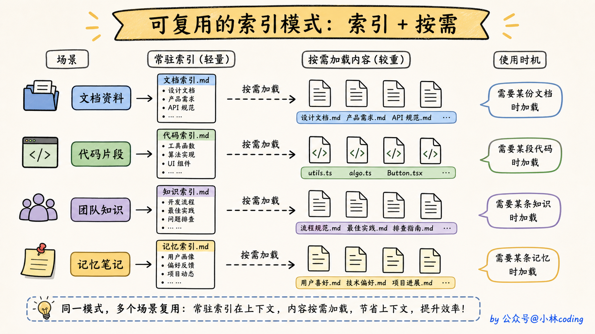
第三条：廉价模型做选择题
向量检索流派把检索当成「数学题」（相似度计算）来做。Claude Code 把检索当成「选择题」来做，让小模型挑。
这是一个非常重要的思维转换。
向量相似度是个数值，它告诉你「这条记忆跟 query 有 0.87 的相似度」。但 0.87 是相关吗？模型不知道，得靠阈值。阈值难定，错召回了你都不知道是哪一步出错了。
让 Sonnet 当选择器，它给你的是自然语言判断：「这条该选，那条不该选」。判错了也是模型可以解释的错，调起来比调阈值容易得多。
成本上，Sonnet 一次选择几百 token，比维护一个向量数据库的人力 + 算力便宜得多。
迁移到自己的项目：只要候选集合不大（几百以内），用小模型选择 > 向量检索。
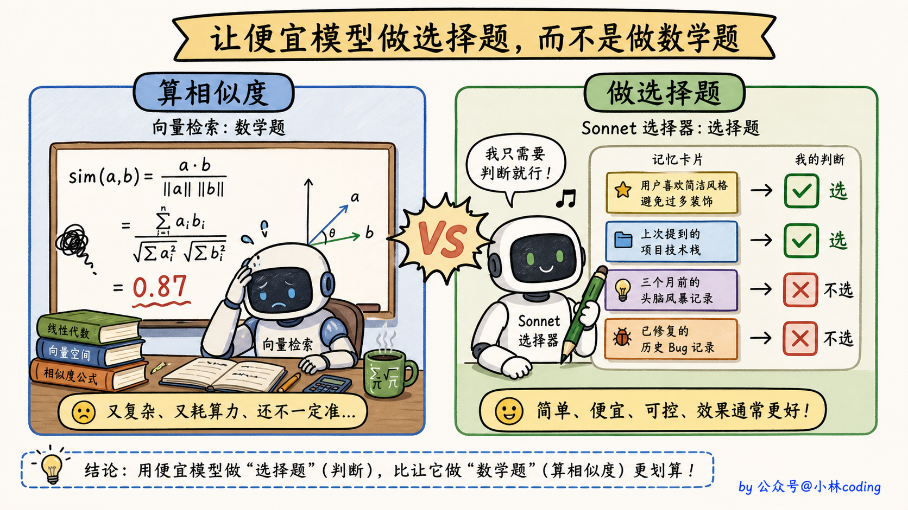
第四条：时间感知 + 主动验证
最后一条，是给「权威的错误」上锁。
记忆系统最大的风险，不是「召回不准」，而是「召回了一条已经过时的记忆，agent 闭着眼睛信」。这种错误特别隐蔽，因为模型把记忆当 ground truth，错也不知道是错。
Claude Code 的两道防线是：
- 时间感知：2 天前的记忆主动加 stale 警告
- 主动验证：记忆里写了文件路径 / 函数 / flag，使用前先 grep 一下
这两道防线背后是同一个心法：记忆不是真理，是历史快照。模型对待记忆的姿态应该像对待 git log，「这是过去发生的事」，不是「这是现在的状态」。
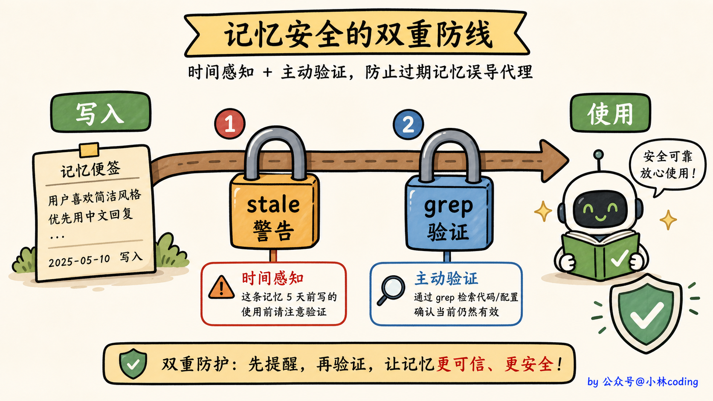
七、这道面试题该怎么答？
回到开头那个面试问题：
你的 agent 项目记忆机制是怎么做的？
先别急着往下看。请你把书合上，自己心里默答一遍。
如果你只能答出「上向量数据库存 embedding 做相似度检索」，那是 60 分答案，跟开头那位被问懵的读者一个水平。
如果你想答 95 分，可以这样组织：
第一步，先指出 LLM 是无状态的。记忆机制的本质是「在工位上贴便签」，所以核心问题是「贴在哪、谁来贴、什么时候撕」。
第二步，指出业界主流方案都有共同短板。滑动窗口、对话摘要、向量检索、分层存储这四类方案的共同病根，是自由文本无约束、不区分类型、没有老化机制、重检索轻写入。
第三步，举 Claude Code 作为反例。它没用向量数据库，而是用了「结构化文件 + LLM 选择」的设计。
展开来说：
- 两层架构：CLAUDE.md 六层级（声明式）+ 自动记忆系统（学习式）
- 四种类型：user / feedback / project / reference，强制分类决策
- 索引常驻：MEMORY.md 索引始终加载、内容按需加载
- 小模型选择：用 Sonnet 当选择器选 top-5，过滤已露脸 + 过滤工具文档
- 老化警告：2 天前的记忆主动加 stale 提醒，逼模型主动验证
第四步，给出可迁移的设计原则：结构化优于自由文本、索引常驻 + 内容按需、廉价模型做选择题、时间感知 + 主动验证。
到这里，面试官不光会觉得你看过 Claude Code 源码，还会觉得你能把这套思路用在自己的 agent 项目里。
如果你能答到这个程度，下次再被问到记忆机制这道题，大概率能拿下 offer。
最后
最后说一句，记忆机制这套设计的精髓。
其实跟 Claude Code 的整体哲学高度一致：不堆复杂度，把已经成熟的简单组件（文件系统 + LLM）组合出比花哨方案更好用的东西。
我们下篇见啦。